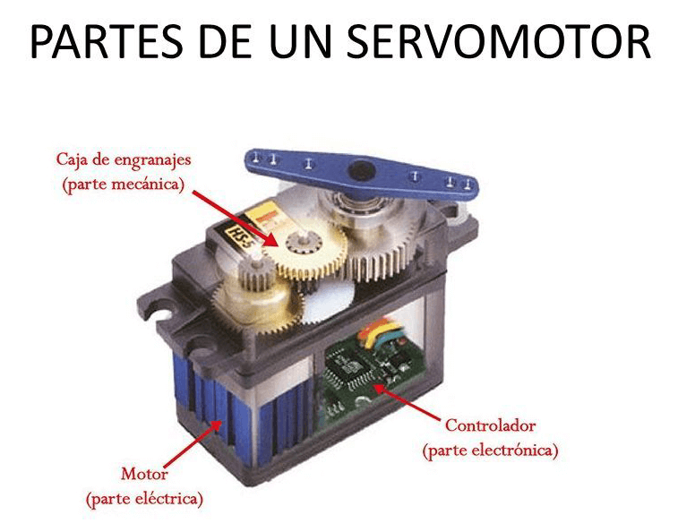
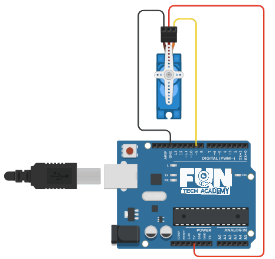
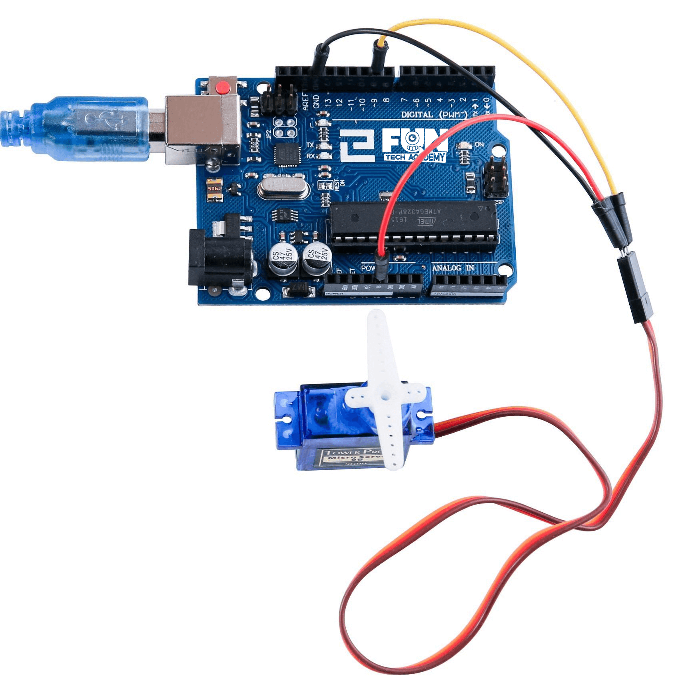

En este tema aprenderemos a utilizar y configurar un servomotor utilizando la placa de arduino, además veremos algunas diferentes utilidades que se le pueden dar a estos componentes electrónicos.
(1) x Placa Arduino
(1) x Servomotor (SG90)
(3) x M M cables (cables macho a macho)
El servo es un motor eléctrico pero con dos características especiales.
Por un lado, nos permite mantener una posición que indiquemos, siempre que esté dentro del rango de operación
del propio dispositivo. Tenemos que tener en cuenta el ángulo de giro, que en este caso nos permite hacer un
barrido entre -90º y 90º. Lo que viene a ser un ángulo de giro de 180º.
Por otro lado nos permite controlar la velocidad de giro, podemos hacer que antes de que se mueva a la
siguiente posición espere un tiempo.
Se controla mediante el envío de impulsos eléctricos de la placa de Arduino. Estos pulsos le dicen al servo
en que dirección debe moverse.
Estos motores funcionan con una señal PWM, con un pulso de trabajo entre 1 ms y 2 ms y con un periodo de
20 ms (50 Hz). ¿Qué quiere decir todo esto? Este dato nos indica la velocidad máxima a la que podemos mover
el servomotor con Arduino. Solo podremos cambiar de posición cada 20 ms. Esto dependerá del tipo y marca de
nuestro servo.
El Servomotor tiene tres cables, el marrón es el cable a tierra y debe conectarse al puerto GND de la placa,
el rojo es el cable de corriente y debe conectarse al puerto de 5v y el naranja es el cacle de señal y debe
conectarse un pin PWM (por ejemplo el 9).

Algunas de las características de este servomotor SG90 que vamos a utilizar son:
- Cable Universal para conectores JR y FP
- Longitud del cable: 25cm
- Velocidad: 0,12 segundos/60 grados (4.8V), 0.10 segundos/60 grados (6.0V) (sin carga)
- Puesto de par (4.8V): 1,6 kg/cm
- Temperatura: -30 ~ 60' C
- Voltaje de funcionamiento: 3.5 ~ 6V
- Dimensión: 3,2 x 3 cm x 1.2 cm)
- Peso: 134 gr.

En la foto, el cable marrón del servo se adapta a través del cable negro, el rojo se adapta a través del cable rojo y el naranja se adapta a través del cable amarillo.

Una vez efectuado todo el cableado, descargaremos el script del siguiente este
link y lo cargaremos como hemos aprendido.
Antes de ejecutar este script, asegúrate de que se ha instalado la biblioteca servo,
de lo contrario, el código no funcionará. El archivo lo descargaremos del siguiente
link.
De la librería Servo.h hemos declarado un objeto o variable servo9 y hacemos uso de dos métodos.
Por un lado el attach, que nos permite indicar en que pin tenemos conectado nuestro servo.
void setup()
{
// Definimos los parámetros del servo:
// - pin: el número del pin al que está conectado el servo
// - min (opcional): el ancho de pulso, en microsegundos,
// correspondiente al ángulo mínimo (0 grados) en el servo
// (predeterminado en 544)
// - max (opcional): el ancho de pulso, en microsegundos,
// correspondiente al ángulo máximo (180 grados) en el servo
// (predeterminado en 2400)
servo_9.attach(9, 500, 2500);
}
Por otro lado el write, donde indicamos en qué ángulo queremos posicionar nuestro servomotor.
servo_9.write(pos);
Otros métodos de la librería servo son:
- writeMicroseconds(tiempo): El parámetro tiempo será el ancho del pulso indicado en microsegundos.
- read(): Lee la posición actual del servo dado en grados, devolviendo un valor entre 0 y 180.
- attached(pin): Verifica si la variable del tipo Servo está asignada al pin indicado. Devuelve un
valor de true o false.
- detach(pin): Separa la variable del tipo Servo del pin indicado.
Para más información sobre los métodos de la librería servo, consulta este
link.
Ya hemos aprendido a manejar el servomotor definiéndolo y moviéndolo.
El reto consiste en añadirle un potenciómetro al ejemplo que será el que controle el ángulo de giro del
servomotor.
Para ello, utilizaremos una nueva función para mapear directamente del rango de valores de salida del potenciómetro al rango de valores de entrada del servo.
map(VariableAMapear,ValorDesdeMasBajo, ValorDesdeMasAlto, ValorHastaMasBajo, ValorHastaMasAlto);